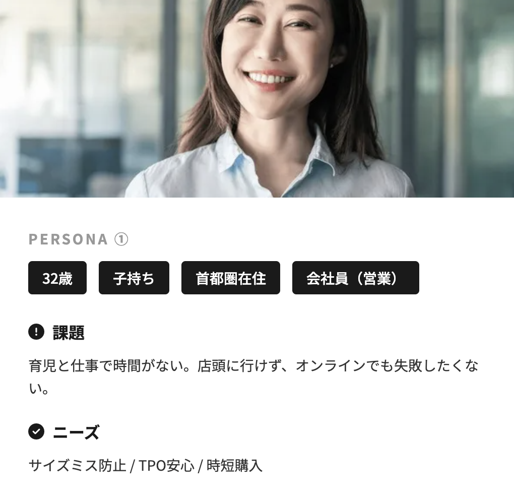
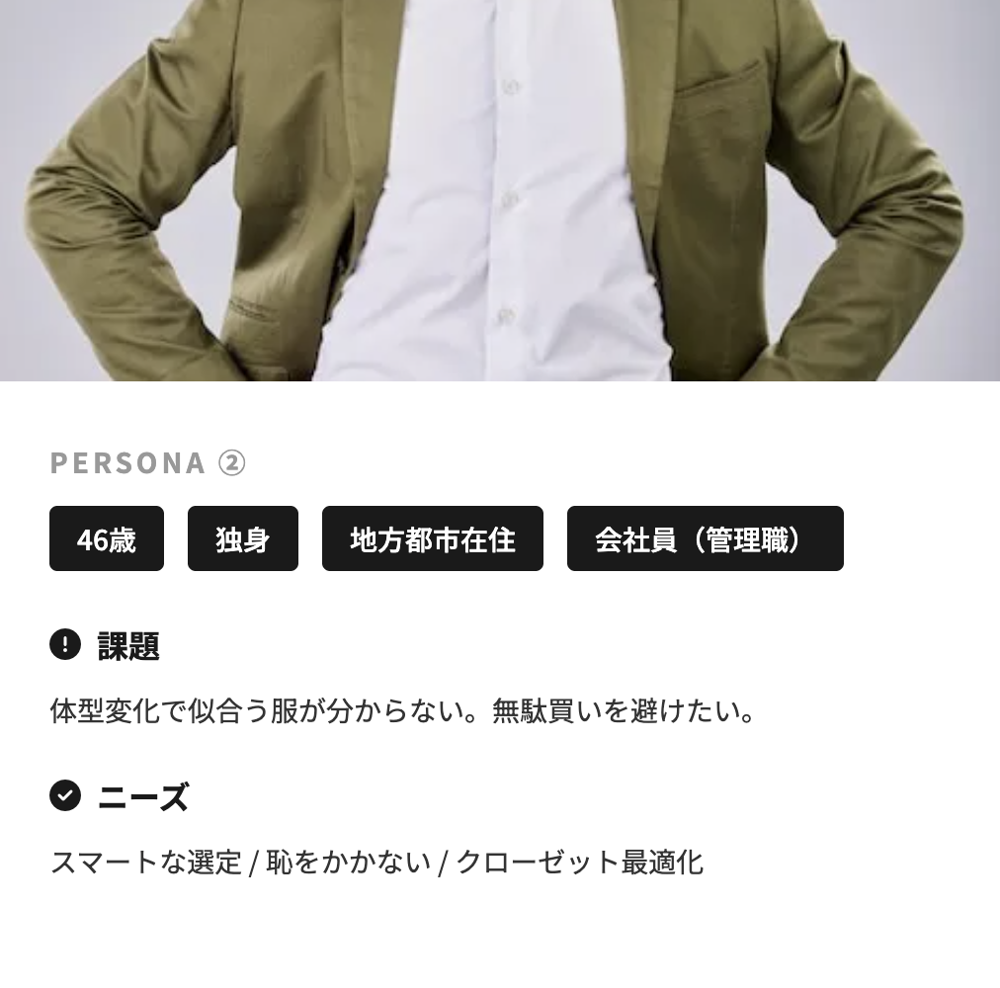
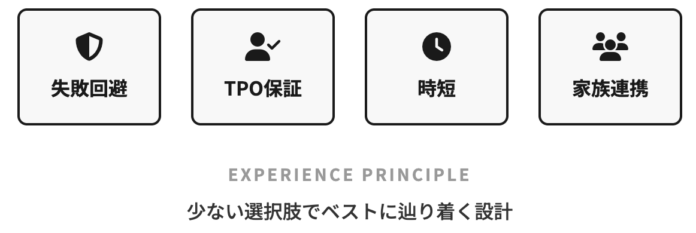
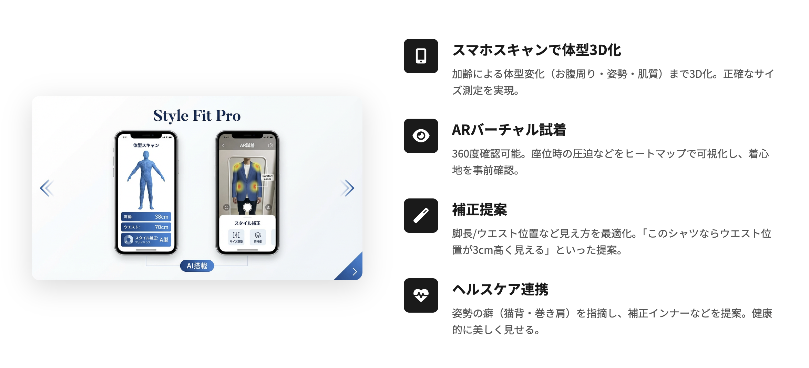
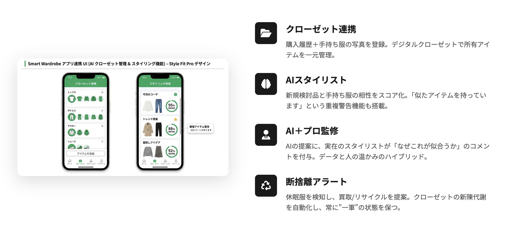
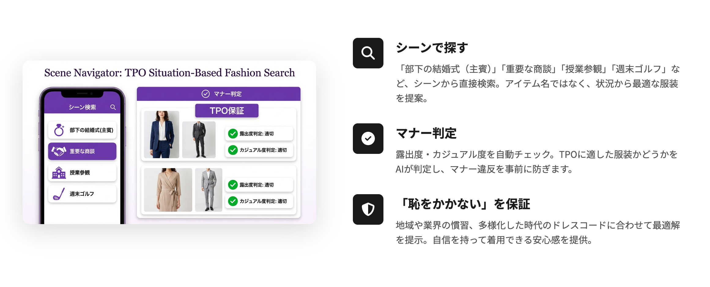
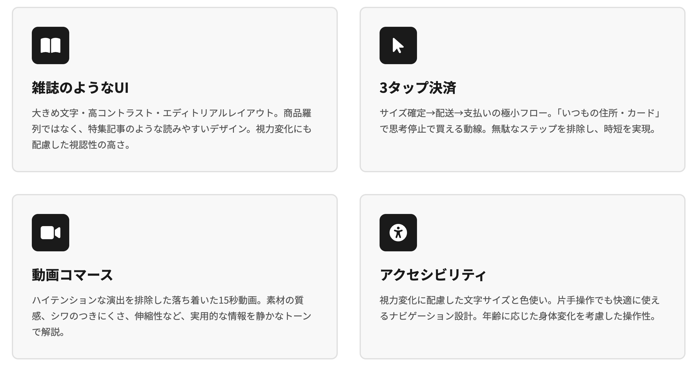
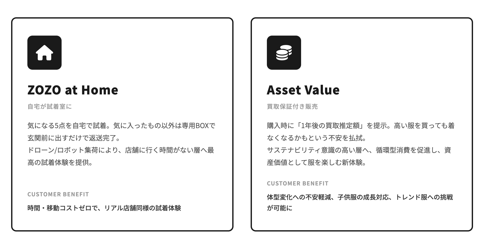

WHO?
誰に？
- 30代〜59歳のミドル世代
- 仕事・育児・介護などに追われる時間貧困層
- 体型変化によって昔の服が似合わなくなったと感じる人
- 家族全員の服を効率的に管理・購入したい人
ECサイトで購買するのが主流になったZOZOTOWN・5年後の未来について
ECサイトで購買することが主流となった、 2030年のZOZOTOWNを想定した未来提案です。
年代別に特化したZOZOTOWNのアプリ。
2030年、ECでの購買が8〜9割を占めるようになり、 リアル店舗は「商品を買う場所」から 「ショールーム」や「体験の場」へ変化している世界を想定しています。
「失敗しない」「恥をかかない」「時間を買える」
年齢や出産などによる体型変化に対して、 今の自分に似合う服が分からないという課題を解決する。
多様性が広がる一方で判断が難しくなったTPOに対して、 場面に適した服装を提案する。
仕事・育児・介護などで忙しい世代に対して、 無数の商品の中から選ぶ負担を減らす。
誰に？
何を？
なぜ？
どのように？


ZOZO EDIT & FAMILY
人生の主役世代に、専属の「編集者」を。
若年層向けの「探す楽しさ」とは異なり、 「選ばなくていい快適さ」 を重視したファッションアプリを提案します。

ミドル世代特有の 「体型変化」「TPO」「時間不足」「家族管理」 といった課題に特化した機能です。
01
スマートフォンによるスキャンを活用し、 単純なサイズだけではなく、 お腹周りや姿勢などの体型変化まで考慮して3D化します。

02
購入予定の商品が、 現在所有している服と組み合わせられるかを判定。 手持ち服との相性を可視化することで、 無駄な買い物を防ぎます。

03
商品カテゴリではなく、 「結婚式」「学校行事」「仕事」「家族イベント」など、 利用するシーンから服を検索できます。

30〜59歳のユーザーを想定し、 視認性や操作の分かりやすさ、 多忙な生活の中でも短時間で使えるUIを重視します。

「時間や手間をお金で解決したい」 という層に向けた付加価値サービスを提供します。

ファッションを、
「買い物」から「生活インフラ」へ。
2030年のZOZOTOWNは、 単に服を購入するECサイトではありません。
ミドル世代が抱える 「時間がない」 「自分に似合う服が分からない」 「TPOを間違えたくない」 といった課題をテクノロジーで解決し、 仕事や家庭に集中するための時間と自信を提供します。